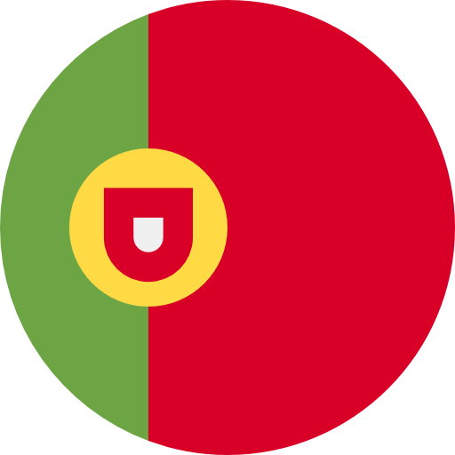
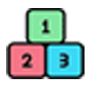
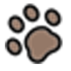

<ion-content [fullscreen]="true" style="display: flex; flex-direction: column">


  <ion-button *ngFor="let item of tema" expand="full" (click)="PlaySound(item.sound_id)">
    
  </ion-button>

  <ion-fab horizontal="start" vertical="top" slot="fixed">
    <ion-fab-button color="warning">
      
    </ion-fab-button>
    <ion-fab-list side="bottom">
      <ion-fab-button>
        
      </ion-fab-button>
      <ion-fab-button>
        
      </ion-fab-button>
      <ion-fab-button>
        
      </ion-fab-button>
    </ion-fab-list>
  </ion-fab>

  <ion-fab horizontal="start" vertical="bottom" slot="fixed">
    <ion-fab-button color="danger">
      
    </ion-fab-button>
    <ion-fab-list side="top">
      <ion-fab-button color="light" (click)="CambiarTema(3)">
        
      </ion-fab-button>
      <ion-fab-button color="light" (click)="CambiarTema(1)">
        
      </ion-fab-button>
      <ion-fab-button color="light" (click)="CambiarTema(2)">
        
      </ion-fab-button>
    </ion-fab-list>
  </ion-fab>

  <ion-fab horizontal="end" vertical="bottom" slot="fixed">
    <ion-fab-button color="danger" (click)="presentAlert()">
      <ion-icon name="exit-outline"></ion-icon>
    </ion-fab-button>
  </ion-fab>
</ion-content>
